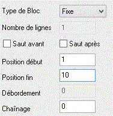
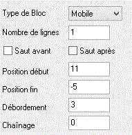
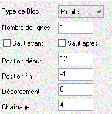
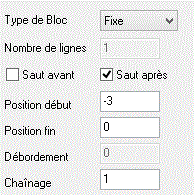

Pour l'état donné en exemple, nous obtenons les caractéristiques suivantes pour chaque bloc :
Bloc 1 : En-tête de page
Ce bloc de type Fixe compte 10 lignes et il est imprimé tout au début de chaque page :

Remarquez qu'un saut de page avant n'est pas paramétré au niveau de ce bloc (il l'est après l'impression du bloc de pied de page). S'il était activé ici, l'édition commencerait toujours par une page blanche. D'autre part, le nombre de lignes n'est pas ici significatif car il se déduit implicitement des Positions début et fin pour les blocs de type Fixe ou Fond. Enfin, les Positions début et fin sont positives car ce bloc ne concerne que le début de page.
Bloc 2 : Détail
Ce bloc de type Mobile compte une seule ligne, répétée entre les lignes 11 et -5 de la page. Le premier bloc détail est donc imprimé immédiatement après le bloc d'en-tête. Le dernier bloc détail peut être imprimé jusqu'à la 5ème ligne avant la fin de la page. En cas de débordement, c'est le bloc 3 qui est imprimé :

Remarquez la valeur négative du paramètre Position fin. Ainsi, le masque pourra être utilisé quelque soit la taille de la page papier.
Bloc 3 : Récapitulatif
Ce bloc de type Mobile compte une ligne et il est utilisé pour présenter un récapitulatif des lignes détails. Il n'est imprimé qu'une fois par page. Pour l'exemple, on a choisi de le positionner immédiatement derrière le dernier bloc détail de la page (*), d'où ses bornes d'impression égales à celles du bloc 2 incrémentées de 1. L'impression de ce bloc est toujours suivie de celle du bloc 4 :

Bloc 4 : Pied de page
Ce bloc de type Fixe compte 4 lignes et il est placé à la toute fin de chaque page. Après son impression, un saut de page est effectué puis le bloc 1 est imprimé sur la page suivante :

Ce bloc ne concerne que le bas de la page, d'où la valeur négative des deux paramètres Position début et Position fin.